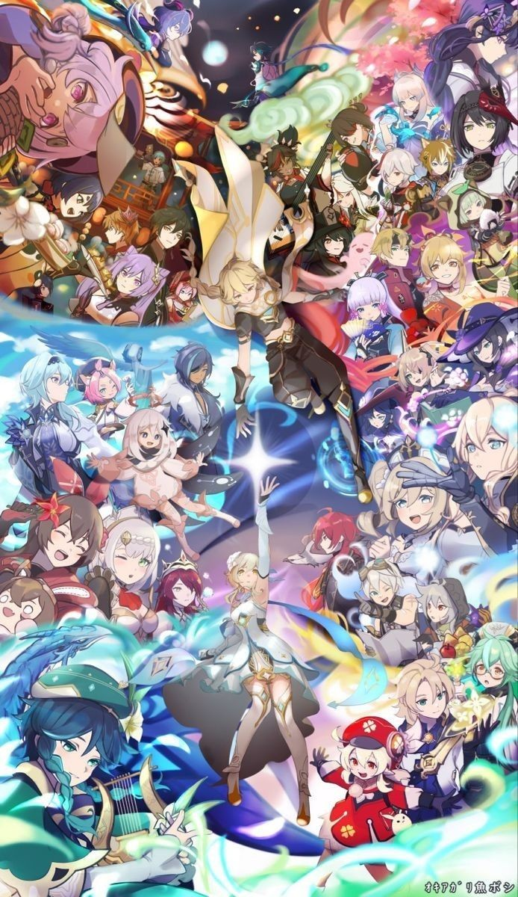
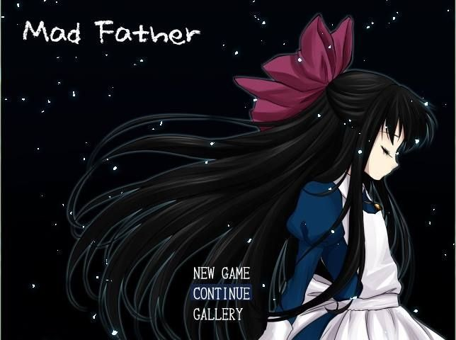
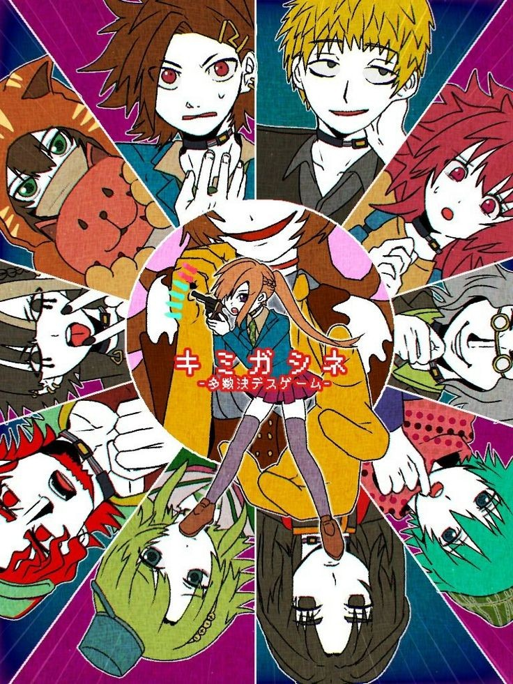

ejemplos
Genshi Impact
es un juego de rol de acción desarrollado por miHoYo, publicado por miHoYo en China continental y en todo el mundo por Cognosphere, d/b/a HoYoverse. Se lanzó para Android, iOS, PlayStation 4 y Windows en 2020, y para PlayStation 5 en
Mad Father
El juego se centra alrededor de una niña de 11 años llamada Aya, que irrumpe dentro del laboratorio secreto de su padre para descubrir la horrible verdad que ella busca
Tasūketsu Death Game
Sara Chidouin, estudiante de secundaria, regresa caminando a casa desde la escuela cuando ella y su amigo, Joe Tazuna, son secuestrados y atrapados en una misteriosa instalación. Luego se ven obligados a competir en un Juego de la Muerte en el que los participantes deciden quién muere mediante la votación por mayoría en el Juego Principal.
